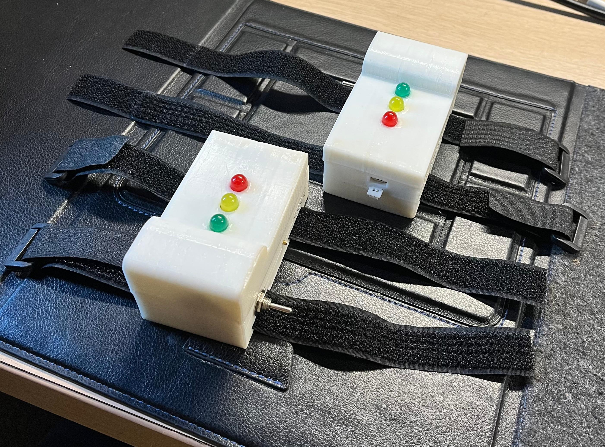
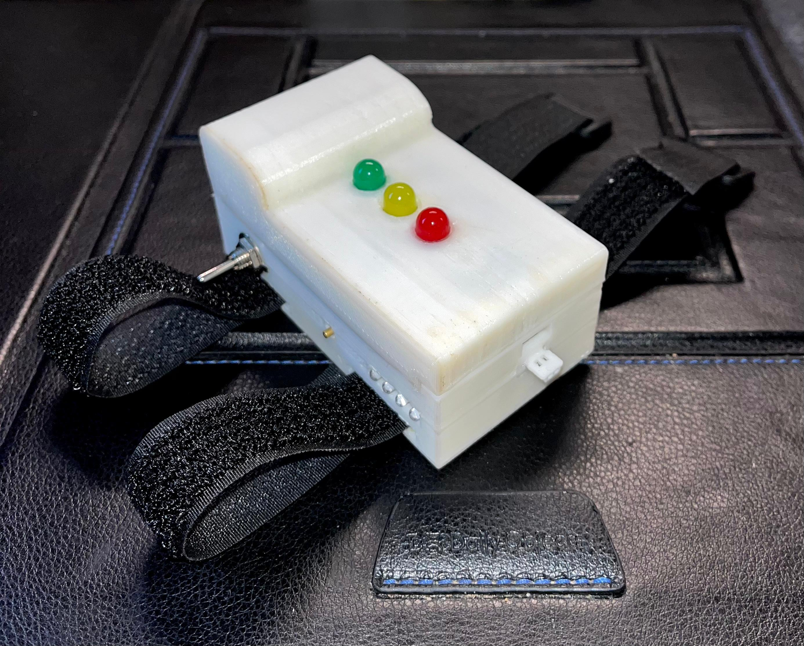
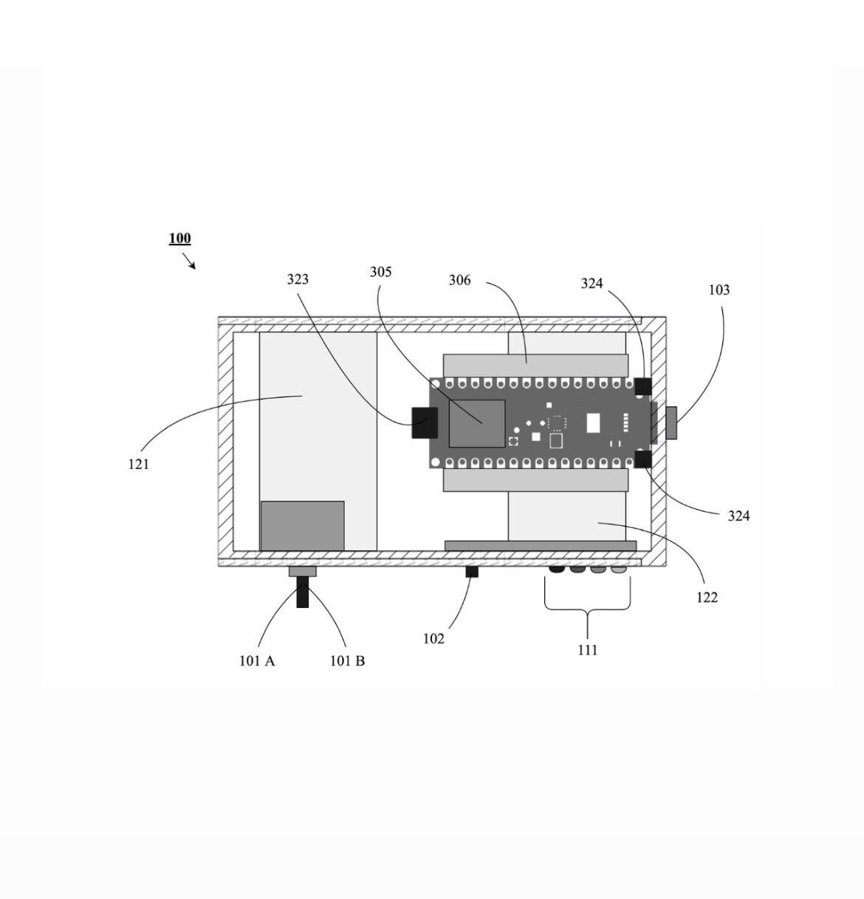
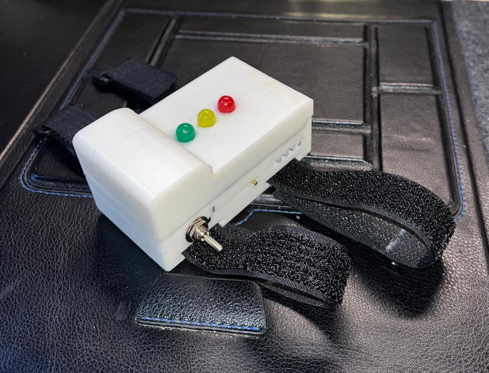
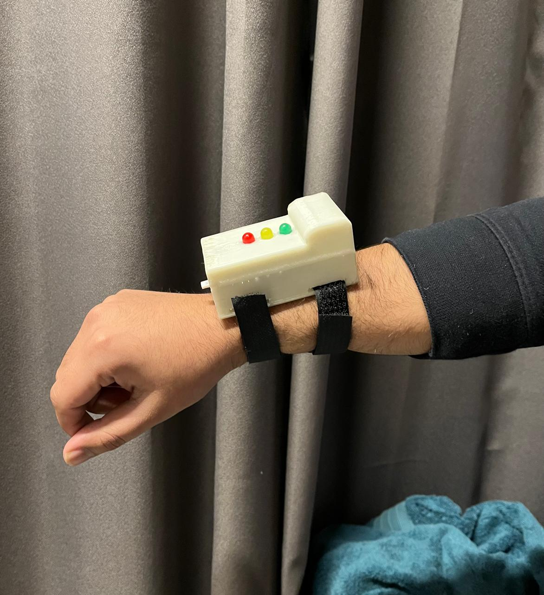

About The
Wearable

PRODUCT DETAILS
How It Is Made ?
- Lightweight, durable materials with breathable straps ensure comfort and a secure fit.
- IMU sensors with gyroscopes and accelerometers provide precise motion tracking.
- An onboard microcontroller converts motion data into actionable insights.
- Rechargeable batteries offer extended use, with LED indicators for status updates.
- Water-resistant casing protects against sweat, water, and dust for reliability.
- Bluetooth enables stable, wireless connection for seamless progress tracking.

How It Is Made ?
- Lightweight, durable materials with breathable straps ensure comfort and a secure fit.
- IMU sensors with gyroscopes and accelerometers provide precise motion tracking.
- An onboard microcontroller converts motion data into actionable insights.
- Rechargeable batteries offer extended use, with LED indicators for status updates.
- Water-resistant casing protects against sweat, water, and dust for reliability.
- Bluetooth enables stable, wireless connection for seamless progress tracking.
How It Works ?
- Each wearable integrates advanced IMU sensors to track angular velocity, acceleration, and orientation, ensuring precise movement analysis during exercises.
- Real-time motion data is processed by an embedded microcontroller, converting raw metrics into actionable insights.
- Bluetooth technology facilitates seamless wireless transmission of processed data to the companion web application.
- The application employs sophisticated Machine Learning algorithms to benchmark movements against a curated library of standard exercise templates.
- Real-time feedback provides accuracy scores and tailored recommendations to enhance technique and performance.

Application / Use Cases
- Optimizes workouts with real-time form feedback, preventing injuries and maximizing training effectiveness.
- Tracks patient recovery and exercise adherence, providing data-driven insights for therapists.
- Analyzes athletic movements to optimize technique and benchmark performance against standards.
- Assesses workplace ergonomics, identifying risks and providing data-driven safety recommendations.

Application / Use Cases
- Optimizes workouts with real-time form feedback, preventing injuries and maximizing training effectiveness.
- Tracks patient recovery and exercise adherence, providing data-driven insights for therapists.
- Analyzes athletic movements to optimize technique and benchmark performance against standards.
- Assesses workplace ergonomics, identifying risks and providing data-driven safety recommendations.
How to Use It?
- Step 1: Strap the wearables to your wrist and ankle, ensuring proper alignment.
- Step 2: Turn on the devices. LEDs indicate battery status: Green (Full), Yellow (Moderate), Red (Low).
- Step 3: Open the web-application and pair via Bluetooth. LEDs indicate: Red (Disconnected), Yellow (Pairing), Green (Paired).
- Step 4: Select an exercise, number of reps and start.
- Step 5: Review metrics and feedback in the app to improve.
